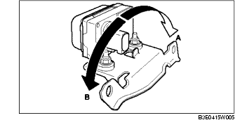
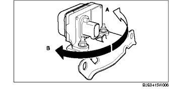

KOMBINATIONSSENSOR PRÜFEN
B3E041543770W02
1. Den Zündschalter auf LOCK drehen.
2. WDS o.Ä. an den Diagnosestecker 2 anschließen.
3. Die folgenden PID-Parameter auswählen und Querbeschleunigung und Giermoment prüfen.
-
- LAT_ACCL (Querbeschleunigung)
-
- YAW_RATE (Giermoment)
-
(1) Querbeschleunigung prüfen
-
1) Sicherstellen, dass sich die LAT_ACCL ändert, wenn der Kombinationssensor nach links und rechts gekippt wird.

-
• Im Falle einer Fehlfunktion den Kombinationssensor austauschen. (Siehe KOMBINATIONSSENSOR AUSBAUEN/EINBAUEN.)
-
Standard
-
Wenn der Sensor nach rechts gekippt wird (A):
-
LAT_ACCL verändert sich positiv.
-
Wenn der Sensor nach links gekippt wird (B):
-
LAT_ACCL verändert sich negativ.
-
(2) Giermoment prüfen
-
1) Sicherstellen, dass sich die YAW_RATE ändert, wenn der Kombinationssensor nach links und rechts gedreht wird.

-
• Wenn ein Defekt vorliegt, den Kombinationssensor austauschen. (Siehe KOMBINATIONSSENSOR AUSBAUEN/EINBAUEN.)
-
Standard
-
Wenn der Sensor nach rechts gedreht wird (A):
-
YAW_RATE verändert sich positiv.
-
Wenn der Sensor nach links gedreht wird (B):
-
YAW_RATE verändert sich negativ.